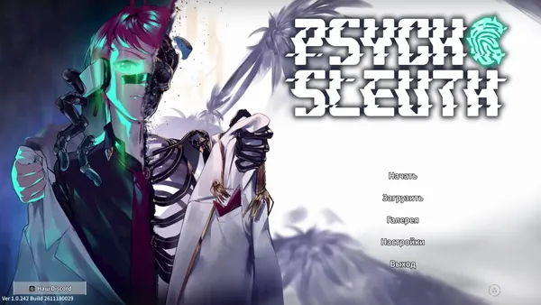
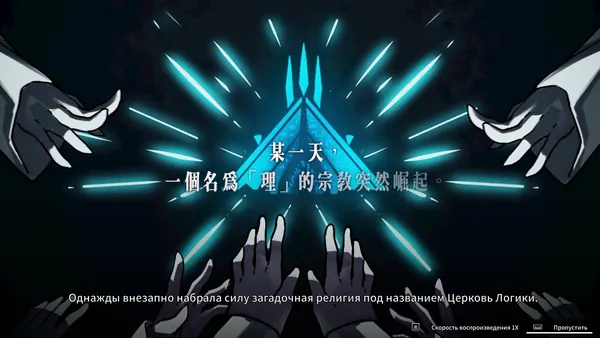

Русификатор Psycho-Sleuth
Детективная новелла в духе игры «Мафия»: тринадцать участников Божественного Отбора, у каждого — свой Патосинк, и среди них скрывается Оборотень. Русский перевод.
версия 1.3 · 23.11.2026 · ≈1,3 МБКак выглядит перевод





Что переведено
Скачать
Распакуйте архив и запустите «Psycho-Sleuth RU Patcher.bat». Патчер сам найдёт папку игры в Steam, сделает резервную копию и поставит перевод за несколько секунд. В комплекте — кнопка «Вернуть английский».
Нужна купленная игра: файлов игры в патчере нет.
Что нового в 1.3: полная вычитка всего текста; исправлен сдвиг реплик в главе 2 (в версиях 1.0–1.2 каждая реплика главы 2 стояла на строку раньше или позже); переведена 21 картинка с надписями и имена на карточках персонажей; аккуратная буква «Й» во всех шрифтах; названия глав 1 и 5 — «Я виновна» и «Сотворение мира» (и способность «Сотворение семьи»); правки после проверки в игре.
Обновляетесь с 1.0, 1.1 или 1.2? Перед обновлением нажмите «Вернуть английский» в старой версии патчера, затем запустите новый и нажмите «Установить перевод». Установка идёт не мгновенно: патчер обрабатывает большой файл игры.
Вопросы
После обновления игра снова на английском
Steam перезаписал файл. Запустите патчер ещё раз — это займёт несколько секунд.
Windows предупреждает при запуске
Это стандартное предупреждение для скачанных скриптов. Нажмите «Запустить» (или «Подробнее» → «Выполнить в любом случае»). Код патчера открыт — он лежит в файле patcher\Patcher.cs.
Как вернуть английский?
Кнопка «Вернуть английский» в патчере или «Проверить целостность файлов» в свойствах игры в Steam.
Нашёл опечатку или английскую строку
Пришлите скриншот в Telegram — поправим в следующей версии патча.